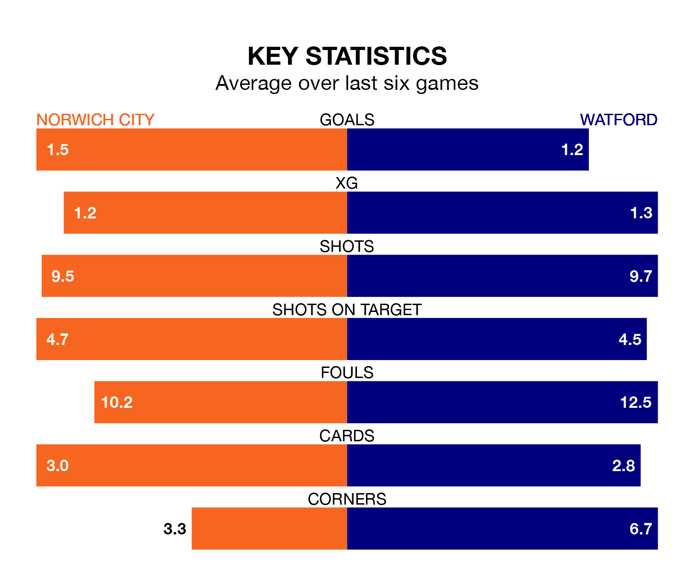

Watford travel to Norwich City on late Tuesday in EFL Championship.
The visitors come into the game on the back of a defeat in their last match, having lost to Leicester City 2-1 at home, with a goal from Emmanuel Dennis.
The Canaries, meanwhile, drew their last match, 2-2 against Queens Park Rangers, with their goals scored by Kenny Mclean and Joshua Sargent.
With 50 goals in 31 games so far this season, Norwich are scoring more than average in the league with 1.6 goals per game. But they are conceding more than average too, letting in 47 goals at a rate of 1.5 per game.
Watford are also above average scorers, with 1.5 goals per game, compared to a league average of 1.4. They have conceded 1.3 goals per game.
In the last 10 years, Norwich and Watford have played each other on 13 occasions. Norwich won four of them and Watford nine.
On average, the Canaries scored 1.4 goals and the Hornets 1.5 in those matches.
Their last meeting was on November 28, when Watford won 3-2 at home.
City are in reasonable form in EFL Championship, with three wins and two draws from their last six games.
With a win and three draws over that period, the Hornets's form is worse – they have taken six points from 18, compared to the Canaries' 11.
In Jon Rowe, the hosts have one of the league's sharpest shooters so far this season. He has notched 12 goals in 28 appearances, to sit sixth in the scoring charts.
His goal rate of one every 162 minutes is quicker than that of Mileta Rajovic, the away team's top scorer with a goal every 180 minutes, and a total of eight goals in 28 games.
Norwich are ninth in the table after 31 games, of which they have won 13 and drawn six, earning 45 points.
Watford are two places behind Norwich in 11th, with 10 wins and 11 draws putting them on 41 points.
Tuesday's match will be refereed by Stuart Attwell, who is taking charge of his first EFL Championship game this season.
He is yet to oversee a match featuring either Norwich or Watford this season.
Updated: 13:30 (UTC), 12/02/24